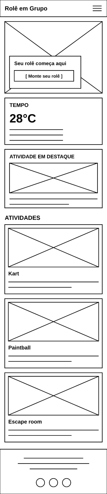
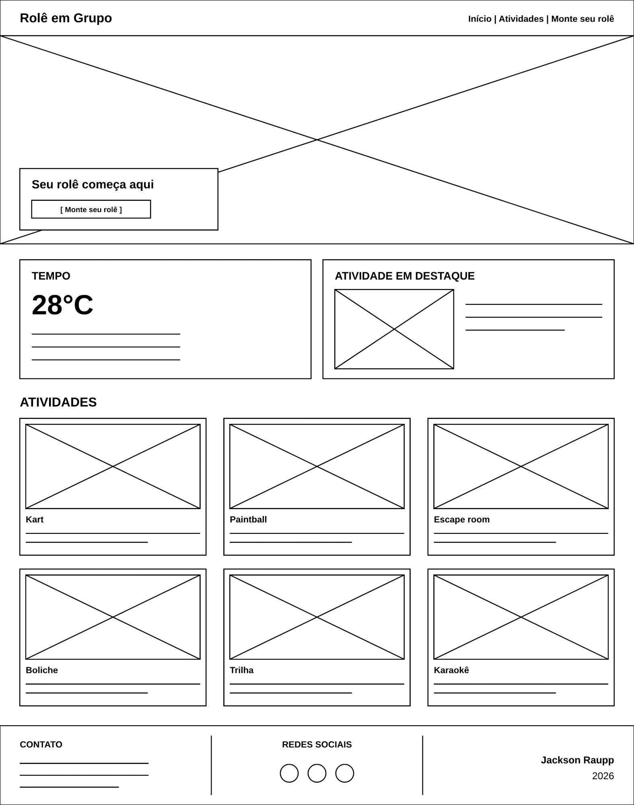

Nome do Site
Rolê em Grupo - "rolê" é como chamamos um passeio com os amigos aqui em Mato Grosso. O nome é curto, fácil de lembrar e já diz que o site é sobre diversão em grupo.
Domínio opcional: roleemgrupo.com.br
Finalidade do Site
O site é um guia de atividades para fazer com os amigos em Cuiabá e Várzea Grande. Ele oferece:
- Cartões com atividades (kart, boliche, paintball, tênis de mesa, banho de rio, churrasco, videogame e jogos em grupo), com faixa de preço, quantidade ideal de pessoas e se é ao ar livre ou em local fechado;
- O tempo atual e a previsão, para saber se o dia é bom para atividades ao ar livre;
- Um formulário para o grupo informar quantas pessoas vão e o orçamento, e receber uma sugestão de rolê.
Cenários
- Somos 6 amigos e temos R$ 50 por pessoa. O que dá para fazer no sábado?
- Vai chover no domingo? Ainda dá para ir no banho de rio ou é melhor jogar boliche?
- Onde fica a pista de kart mais perto e quanto custa uma bateria?
Esquema de Cores
Laranja #bf360c
Botões, links e destaques.
Azul-escuro #1a1a2e
Cabeçalho e rodapé, com texto branco.
Amarelo #ffc107
Detalhes sobre o azul-escuro, como a borda do cabeçalho.
Cinza-claro #f5f5f5
Fundo das páginas, com texto em #222222.
Tipografia
Poppins - Bora pro rolê!
Poppins (negrito): títulos e nome do site. É arredondada e moderna, combina com um site de diversão.
Open Sans - Bora pro rolê!
Open Sans: textos, cartões e formulário. É muito legível em telas pequenas.
Wireframe
Página inicial em telas pequenas e em telas grandes.

